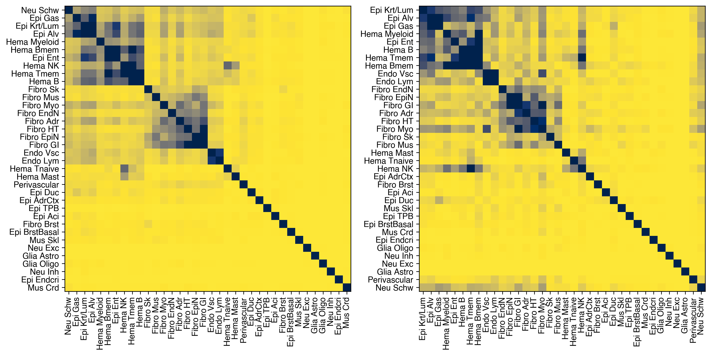
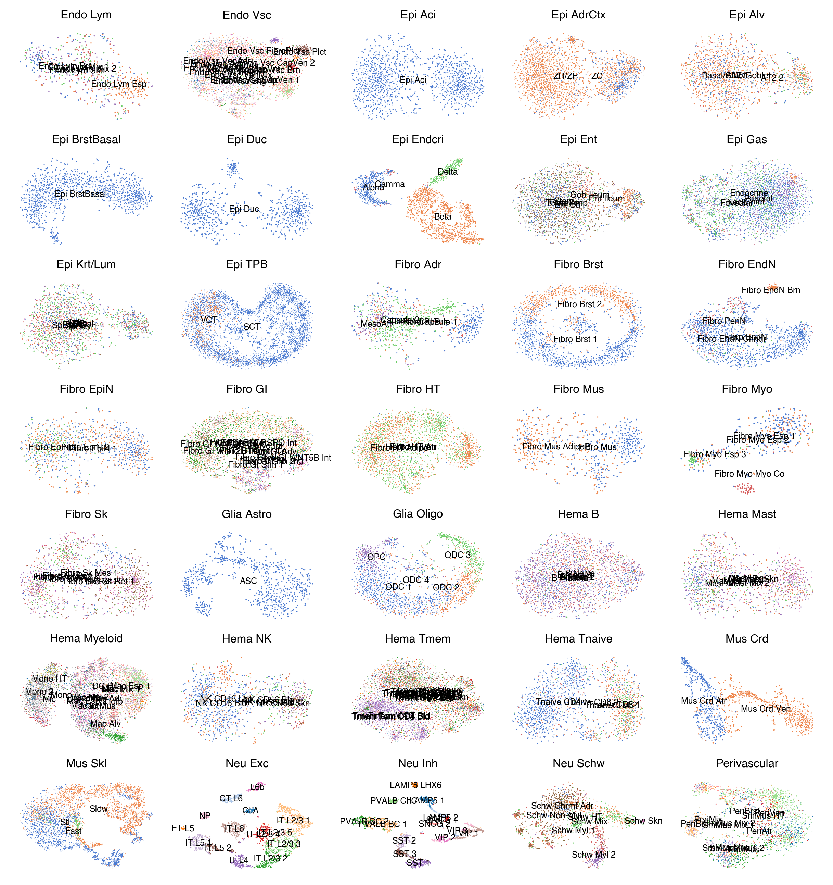

7. MCH clustering#
Part of the Fig. 3 chapter — see it for the panel-by-panel map. The first code cell sets ENTEX_ROOT and activates the no-overwrite guard (see the Reproduction guide). Outputs shown are the author’s original run.
📥 Required input files#
This notebook reads the following files (paths resolve from ENTEX_ROOT/REF_ROOT; the setup cell sets them). See the chapter’s inputs.md for RAW-vs-derived tags.
f'{indir}clustering/merged/5kCG100k3C_summary.h5ad'· joint summary objf'{indir}clustering/merged/L2final_celltype_L2both_new.tsv'· tablef'{indir}L1color.tsv'· metadata: colorf'{indir}tissuecolor.tsv'· metadata: colorf'{outdir}cell_{meta.shape[0]}_100kCH.h5ad'· metadataf'{outdir}cell_86689_100kCH.h5ad'· otherf'{outdir}L1/{xx}/100kCH_embed.h5ad'· embedding h5adf'{outdir}tissue/{xx}/100kCH_embed.h5ad'· embedding h5ad
# === Reproduction setup — edit ENTEX_ROOT / REF_ROOT for your machine ===
import os, sys
ENTEX_ROOT = os.environ.get('ENTEX_ROOT', '/large_storage/zhoulab/zhoujt/project/ENTEx')
REF_ROOT = os.environ.get('REF_ROOT', '/large_storage/zhoulab/ref')
BOOK_ROOT = os.environ.get('BOOK_ROOT', f'{ENTEX_ROOT}/analysis/HumanCellEpigenomeAtlas')
sys.path.insert(0, BOOK_ROOT)
os.chdir(f'{ENTEX_ROOT}/analysis') # original working directory
import repro_guard # no-overwrite guard (default: skip existing)
from glob import glob
import anndata
import matplotlib as mpl
import matplotlib.pyplot as plt
import numpy as np
import pandas as pd
import scanpy as sc
import scanpy.external as sce
import seaborn as sns
from ALLCools.clustering import *
from ALLCools.integration.seurat_class import SeuratIntegration
from ALLCools.plot import *
from ALLCools.mcds import MCDS
from sklearn.metrics import pairwise_distances, roc_auc_score, average_precision_score
from sklearn.preprocessing import normalize
from sklearn.decomposition import PCA
from sklearn.model_selection import StratifiedKFold
from sklearn.linear_model import LogisticRegression
mpl.style.use("default")
mpl.rcParams["pdf.fonttype"] = 42
mpl.rcParams["ps.fonttype"] = 42
mpl.rcParams["font.family"] = "sans-serif"
mpl.rcParams["font.sans-serif"] = "Helvetica"
import warnings
warnings.filterwarnings("ignore")
def dump_embedding(adata, name, n_dim=2):
# put manifold coordinates into adata.obs
for i in range(n_dim):
adata.obs[f'{name}_{i}'] = adata.obsm[f'X_{name}'][:, i]
return adata
indir = f'{ENTEX_ROOT}/'
outdir = f'{indir}analysis/mCH_clustering/'
meta = anndata.read_h5ad(f'{indir}clustering/merged/5kCG100k3C_summary.h5ad').obs
meta['L1'] = meta['L1'].astype(str)
meta.loc[meta['L1']=='c7', 'L1'] = 'c35'
meta.loc[(meta['L1']=='c35') & meta['L2_any'].isin(['c0','c10','c11']), 'L1'] = 'c36'
gene_meta_path = f'{REF_ROOT}/hg38/gencode/v30/gencode.v30.annotation.gene.flat.tsv.gz'
black_list_path = f'{REF_ROOT}/blacklist/hg38-blacklist.v2.bed.gz'
chrom_to_remove = ['chrL', 'chrM', 'chrX', 'chrY']
mcds_path_list = np.sort(glob(f'{indir}mcds/*.mcds'))
print(len(mcds_path_list))
24
obs_dim = 'cell'
var_dim = 'chrom100k'
mcds = MCDS.open(mcds_path_list, var_dim=var_dim)
mcds
<xarray.MCDS> Size: 46GB
Dimensions: (chrom100k: 30895, count_type: 2, mc_type: 2, cell: 93550)
Coordinates:
* chrom100k (chrom100k) <U10 1MB 'chr1_0' 'chr1_1' ... 'chrY_572'
* count_type (count_type) <U3 24B 'mc' 'cov'
* mc_type (mc_type) <U3 24B 'CGN' 'CHN'
* cell (cell) <U34 13MB 'M1C_3C_001_Plate1-1-F3-A1' ... 'Sk_IOB...
chrom100k_chrom (chrom100k) <U5 618kB dask.array<chunksize=(15448,), meta=np.ndarray>
chrom100k_end (chrom100k) int64 247kB dask.array<chunksize=(30895,), meta=np.ndarray>
chrom100k_start (chrom100k) int64 247kB dask.array<chunksize=(30895,), meta=np.ndarray>
Data variables:
chrom100k_da (cell, chrom100k, mc_type, count_type) uint32 46GB dask.array<chunksize=(13, 15448, 1, 1), meta=np.ndarray>
Attributes:
obs_dim: cell
var_dim: chrom100kmcds = mcds.sel({obs_dim: mcds.get_index('cell').intersection(meta.index)})
mcds = mcds.remove_chromosome(exclude_chromosome=chrom_to_remove, var_dim=var_dim)
mcds = mcds.remove_black_list_region(black_list_path=black_list_path, f=0.5)
mcds
<xarray.MCDS> Size: 37GB
Dimensions: (chrom100k: 26917, count_type: 2, mc_type: 2, cell: 86689)
Coordinates:
* chrom100k (chrom100k) <U10 1MB 'chr1_8' 'chr1_9' ... 'chr9_1381'
* count_type (count_type) <U3 24B 'mc' 'cov'
* mc_type (mc_type) <U3 24B 'CGN' 'CHN'
* cell (cell) <U34 12MB 'M1C_3C_001_Plate1-1-F3-A2' ... 'Sk_IOB...
chrom100k_chrom (chrom100k) <U5 538kB dask.array<chunksize=(14321,), meta=np.ndarray>
chrom100k_end (chrom100k) int64 215kB dask.array<chunksize=(26917,), meta=np.ndarray>
chrom100k_start (chrom100k) int64 215kB dask.array<chunksize=(26917,), meta=np.ndarray>
Data variables:
chrom100k_da (cell, chrom100k, mc_type, count_type) uint32 37GB dask.array<chunksize=(12, 14321, 1, 1), meta=np.ndarray>
Attributes:
obs_dim: cell
var_dim: chrom100k# global_cg = mcds[f'{var_dim}_da'].sel(mc_type='CGN').sum(dim=var_dim).to_pandas()
# global_ch = mcds[f'{var_dim}_da'].sel(mc_type='CHN').sum(dim=var_dim).to_pandas()
# meta['mCGFrac'] = global_cg['mc'] / global_cg['cov']
# meta['mCHFrac'] = global_ch['mc'] / global_ch['cov']
# meta.to_csv(f'{indir}MappingSummary.csv.gz')
feature_cov_mean
chrom100k
chr1_8 1165.125991
chr1_9 2432.045496
chr1_10 2391.386750
chr1_11 2325.914626
chr1_12 2451.226592
...
chr9_1377 1929.590663
chr9_1378 1830.969131
chr9_1379 1897.276460
chr9_1380 2020.684343
chr9_1381 1331.678229
Length: 26917, dtype: float64
mc_type = 'CHN'
feature_cov_mean = mcds[f'{var_dim}_da'].sel(mc_type=mc_type, count_type='cov').mean(dim=obs_dim).to_pandas()
fig, ax = plt.subplots(figsize=(4,2), dpi=300)
sns.histplot(feature_cov_mean, bins=100, ax=ax)
<Axes: ylabel='Count'>
use_features = feature_cov_mean[feature_cov_mean > 1000].index
mcds = mcds.sel({var_dim:use_features})
mcds.add_mc_frac(var_dim=var_dim, normalize_per_cell=True, clip_norm_value=10)
mch_adata = mcds.get_adata(mc_type=mc_type, var_dim=var_dim, select_hvf=False)
model = PCA(n_components=100, svd_solver='arpack', random_state=0)
mch_adata.obsm['pca_all'] = model.fit_transform(mch_adata.X)
npc = significant_pc_test(mch_adata, obsm='pca_all', p_cutoff=0.01, update=False)
Downsample PC matrix to 50000 cells to calculate significant PC components
58 components passed P cutoff of 0.01.
npc = 50
mch_adata.obsm['100kCH_pca'] = mch_adata.obsm['pca_all'][:, :npc].copy()
tsne(mch_adata, obsm='100kCH_pca', metric='euclidean', exaggeration=-1, perplexity=50, n_jobs=-1)
mch_adata.obsm[f'100kCH_pc{npc}_tsne'] = mch_adata.obsm['X_tsne'].copy()
mch_adata = mch_adata[meta.index].copy()
mch_adata.obs = meta.copy()
mch_adata
AnnData object with n_obs × n_vars = 86689 × 25572
obs: 'FinalmCReads', 'mCHFrac', 'mCGFrac', 'CisLongContact', 'Cis/Trans', 'Donor', 'Tissue', 'celltype', 'ClusterTissue', 'tsne_0', 'tsne_1', 'leiden_cons', 'leiden_cv', 'leiden_init', 'batch', 'L1_annot', 'L1', 'L2', 'L2_any', 'L2_both', 'L2_mc', 'L2_3c', 'tissue_annot', 'group', 'cluster', 'Short/Long'
var: 'chrom', 'end', 'start'
obsm: 'pca_all', '100kCH_pca', 'X_tsne', '100kCH_pc50_tsne'
# mch_adata.obsm['X_pca'] = normalize(mch_adata.obsm['100kCH_pca'][:,:10], axis=1)
# #mcad.obsm['X_pca'] = mcad.obsm['5kCG_pca'][:,:25]
# knn = 25
# sc.pp.neighbors(mch_adata, n_neighbors=knn, use_rep=f'X_pca')
# sc.tl.umap(mch_adata, maxiter=200, random_state=0)
# dump_embedding(mch_adata, 'umap')
# mch_adata.obsm[f'100kCH_pc10_umap'] = mch_adata.obsm['X_umap'].copy()
L1_meta = pd.read_csv(f'{indir}L1color.tsv', sep='\t', header=0, index_col=0)
L1_annot = L1_meta['L1_abbr'].to_dict()
L1_color = L1_meta['color'].to_dict()
L1_color.update({L1_annot[k]: L1_color[k] for k in L1_annot if k in L1_color}) # also key by name
# L1_annot['c35'] = 'Hema Bnaive'
# L1_annot['c7'] = 'Hema Bmem'
# L1_color['c35'] = L1_color['c7']
# L1_meta = pd.read_csv(f'{indir}L1color.tsv', sep='\t', header=0, index_col=0)
# L1_color = L1_meta['color'].to_dict()
tissue_meta = pd.read_csv(f'{indir}tissuecolor.tsv', sep='\t', header=0, index_col=0)
tissue_color = tissue_meta['color'].to_dict()
mch_adata = anndata.read_h5ad(f'{outdir}cell_{meta.shape[0]}_100kCH.h5ad')
knn = 25
sc.pp.neighbors(mch_adata, n_neighbors=knn, use_rep='100kCH_pca')
sc.tl.leiden(mch_adata, resolution=1.0, random_state=0, flavor='igraph')
mch_adata.obs = meta.loc[mch_adata.obs.index].copy()
mpl.use('agg')
ds = 0.2
npc = 50
coord_base = 'tsne'
mch_adata.obsm[f'X_{coord_base}'] = mch_adata.obsm[f'100kCH_pc{npc}_{coord_base}'].copy()
dump_embedding(mch_adata, coord_base)
fig, axes = plt.subplots(2, 3, figsize=(15, 8), dpi=300, constrained_layout=True)
tmp = mch_adata.obs.copy()
ax = axes[0, 0]
_ = categorical_scatter(data=tmp,
ax=ax,
coord_base=coord_base,
hue='Donor',
s=ds,
labelsize=8,
max_points=None,
palette='tab20',
scatter_kws={'rasterized':True},
# show_legend=True
)
ax = axes[0, 1]
_ = categorical_scatter(data=tmp,
ax=ax,
coord_base=coord_base,
hue='Tissue',
s=ds,
labelsize=8,
max_points=None,
palette=tissue_color,
scatter_kws={'rasterized':True},
# show_legend=True,
# legend_kws={'ncol':1},
)
ax = axes[0, 2]
_ = categorical_scatter(data=tmp,
ax=ax,
coord_base=coord_base,
hue='L1',
text_anno=tmp['L1'].map(L1_annot),
s=ds,
labelsize=8,
max_points=None,
palette=L1_color,
scatter_kws={'rasterized':True},
# legend_kws={'ncol':1},
# show_legend=True
)
ax = axes[1, 0]
_ = continuous_scatter(ax=ax,
data=tmp,
hue=np.log10(tmp['FinalmCReads']+1),
scatter_kws={'rasterized':True},
coord_base=coord_base,
max_points=None,
labelsize=8,
s=ds
)
ax = axes[1, 1]
_ = continuous_scatter(ax=ax,
data=tmp,
hue='mCGFrac',
scatter_kws={'rasterized':True},
coord_base=coord_base,
max_points=None,
labelsize=8,
s=ds
)
ax = axes[1, 2]
_ = continuous_scatter(ax=ax,
data=tmp,
hue='mCHFrac',
scatter_kws={'rasterized':True},
coord_base=coord_base,
max_points=None,
labelsize=8,
hue_norm=[0.005,0.02],
s=ds
)
fig.savefig(f'{outdir}All_100kCH_meta.pdf', transparent=True)

ds = 0.2
npc = 50
coord_base = 'tsne'
# mch_adata.obsm[f'X_{coord_base}'] = mch_adata.obsm[f'100kCH_pc{npc}_{coord_base}'].copy()
# dump_embedding(mch_adata, coord_base)
fig, axes = plt.subplots(1, 2, figsize=(10, 4), dpi=300, constrained_layout=True)
tmp = mch_adata.obs.copy()
ax = axes[0]
_ = categorical_scatter(data=tmp,
ax=ax,
coord_base=coord_base,
hue='L1',
# text_anno=tmp['L1'].map(L1_annot),
s=ds,
labelsize=8,
max_points=None,
palette=L1_color,
scatter_kws={'rasterized':True},
# legend_kws={'ncol':1},
# show_legend=True
)
for xx,yy in L1_annot.items():
x, y = np.mean(mch_adata.obsm[f'X_{coord_base}'][tmp['L1']==xx], axis=0)
ax.text(x, y, yy, ha='center', va='center', fontsize=8)
ax = axes[1]
_ = continuous_scatter(ax=ax,
data=tmp,
hue='mCHFrac',
scatter_kws={'rasterized':True},
coord_base=coord_base,
max_points=None,
labelsize=8,
cmap='vlag',
hue_norm=[0.005,0.02],
s=ds
)
fig.savefig(f'{outdir}All_100kCH_meta.pdf', transparent=True)
mch_adata.write_h5ad(f'{outdir}cell_{mch_adata.shape[0]}_100kCH.h5ad')
mch_adata = anndata.read_h5ad(f'{outdir}cell_86689_100kCH.h5ad')
clf = LogisticRegression(class_weight='balanced')
skf = StratifiedKFold(n_splits=3, shuffle=True)
label = mch_adata.obs['L1'].copy()
leg = pd.Index(np.sort(label.unique()))
count = label.astype(str).value_counts()
score = np.zeros((2, len(leg), len(leg)))
data = mch_adata.obsm['100kCH_pca'].copy()
for i in np.arange(len(leg)-1):
for j in np.arange(i+1, len(leg)):
selc = label.isin([leg[i], leg[j]])
if count.loc[leg[i]]<count.loc[leg[j]]:
label_dict = {leg[i]:1, leg[j]:0}
else:
label_dict = {leg[i]:0, leg[j]:1}
# selc = np.random.permutation(np.where(selc)[0])
X = data[selc]
y = label.values[selc].map(label_dict)
pred = np.zeros(len(y))
for train_index, test_index in skf.split(X, y):
X_train, X_test, y_train, y_test = X[train_index], X[test_index], y[train_index], y[test_index]
pred[test_index] = clf.fit(X_train, y_train).predict_proba(X_test)[:,1]
score[0,i,j] = roc_auc_score(y, pred)
score[1,i,j] = average_precision_score(y, pred)
legname = leg.map(L1_annot)
fig, axes = plt.subplots(1, 2, figsize=(12, 6), dpi=300)
for i in range(2):
tmp = pd.DataFrame(score[i], index=legname, columns=legname)
tmp = tmp + tmp.T
cg = sns.clustermap(tmp, metric='cosine', figsize=(0.1, 0.1))
rorder = cg.dendrogram_row.reordered_ind.copy()
corder = cg.dendrogram_col.reordered_ind.copy()
ax = axes[i]
ax.imshow(tmp.values[rorder][:, corder], cmap='cividis', vmin=[0.8, 0.6][i], vmax=1)
ax.set_xticks(np.arange(len(leg)))
ax.set_yticks(np.arange(len(leg)))
ax.set_xticklabels(legname[corder], rotation=90)
ax.set_yticklabels(legname[rorder])
fig.tight_layout()
fig.savefig('mCH_clustering/100kCH_L1_rocpr.pdf', transparent=True)

L1_meta = L1_meta.drop(['c35','c36'], axis=0)
from gliderport.preset import notebook_snakemake
# group_list = list(tissue_meta.index)
group_list = list(L1_meta.index)
print(len(group_list))
35
notebook_snakemake(
work_dir=f'{outdir}L1/',
notebook_dir=f'{outdir}L1/template/',
groups=group_list,
default_cpu=4,
default_mem_gb=16,
redo_prepare=True,
)
mch_adata.obs['L1'] = mch_adata.obs['L1'].astype(str)
selc = (mch_adata.obs['L1']=='c35')
mch_adata.obs.loc[selc, 'L1'] = 'c7'
for xx in group_list:
tmp = mch_adata[mch_adata.obs['L1']==xx].copy()
tmp.write_h5ad(f'{outdir}L1/{xx}/100kCH.h5ad')
!snakemake --snakefile Snakefile -j --keep-going
Error: Snakefile "Snakefile" not found.
coord_base = 'tsne'
# mpl.use('agg')
fig, axes = plt.subplots(7, 5, figsize=(8,8.5), dpi=300, constrained_layout=True)
for i,xx in enumerate(L1_meta.index):
l1_name = L1_meta.loc[xx, 'L1_abbr']
adata_tmp = anndata.read_h5ad(f'{outdir}L1/{xx}/100kCH_embed.h5ad')
adata_tmp.obs['celltype'] = meta['celltype_L2_both_abbr'].astype(str)
dump_embedding(adata_tmp, coord_base)
leg = adata_tmp.obs['celltype'].unique()
if len(leg)<=10:
palette = 'muted'
else:
palette = 'tab20'
print(xx, len(leg))
ds = 20/np.sqrt(adata_tmp.shape[0])
ax = axes.flatten()[i]
tmp = adata_tmp.obs.copy()
_ = categorical_scatter(data=tmp,
ax=ax,
coord_base=coord_base,
hue='celltype',
s=ds,
max_points=None,
palette=palette,
scatter_kws={'rasterized':True},
axis_format='empty',
)
for yy,(x,y) in tmp.groupby('celltype')[['tsne_0', 'tsne_1']].mean().iterrows():
ax.text(x, y, yy, ha='center', va='center', fontsize=6)
ax.set_title(l1_name, fontsize=8)
for ax in axes.flatten()[L1_meta.shape[0]:]:
ax.axis('off')
fig.savefig(f'{outdir}L1_mCH_seurat_tsne_celltype.pdf', transparent=True)
c33 5
c3 15
c22 1
c9 2
c20 4
c25 1
c30 1
c13 4
c8 6
c4 5
c18 7
c2 2
c29 5
c17 2
c19 4
c28 3
c6 13
c11 3
c32 2
c34 4
c23 7
c31 1
c14 5
c7 5
c24 7
c0 17
c27 6
c1 14
c15 4
c26 2
c5 3
c10 14
c16 14
c21 7
c12 11

from gliderport.preset import notebook_snakemake
group_list = list(tissue_meta.index)
# group_list = list(L1_meta.index)
print(len(group_list))
16
notebook_snakemake(
work_dir=f'{outdir}tissue/',
notebook_dir=f'{outdir}tissue/template/',
groups=group_list,
default_cpu=4,
default_mem_gb=16,
redo_prepare=True,
)
for xx in group_list:
tmp = mch_adata[mch_adata.obs['Tissue']==xx].copy()
tmp.write_h5ad(f'{outdir}{xx}/100kCH.h5ad')
!snakemake --snakefile Snakefile -j --keep-going